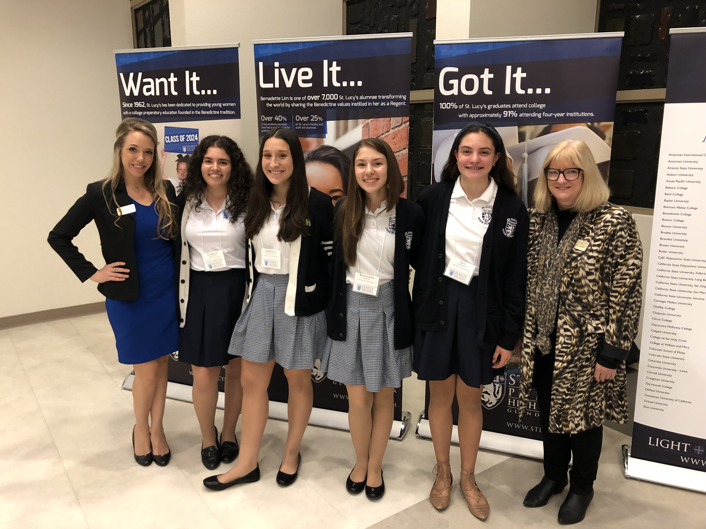

Isabella Annabi
Hello! My name is Isabella Annabi and I am currently studying Business Marketing at the University of California, Riverside. I am about finishing up my freshman year. with a 3.42 cumulative GPA, which I plan to raise in the coming years. My goal is to graduate with a 3.5 or higher GPA with a Bachelor’s Degree in Business Marketing. During my time at UCR, it is important to me that I am involved on campus. This year I am involved in several organizations such as the Lebanese Student Organization and KIWANIS. Both of these organizations strive to help their community while encouraging their members to be the best versions of themselves. In the next few years, I hope to become more involved with these organizations and I plan to be a part of more campus organizations. I am very excited to see what the next years have in store for me. I am eager to be more involved in school activities and to meet more people.
I currently live in Southern California with my parents and my brother. My family inspires me everyday to do better and achieve greater things. We are all very close and they have always been supportive of me and my passions. They always believed in me even when I didn’t, and I am truly grateful for them.
I chose to study marketing because I enjoy researching new and interesting topics, as well as inputting my creative touch. I also have many bright and insightful ideas that can truly benefit companies and organizations. Overall, I find marketing very interesting because in today’s new age of technology, marketing is the only way to spread the word about new products, movies, technology and more; which is something I would love to be a part of! To be a marketer I have learned that there are several key skills that are needed. One of the most important skills is to be proficient on a computer or other technology. I am well versed in various social media platforms such as Instagram, Twitter and Facebook. I am also proficient in Microsoft and Google applications. By being a board member of my high school’s KIWINS club, I learned how to effectively communicate with a vast number of students through various platforms, as well as logging in membership data. Another skill that is needed is to be interpersonal. Being able to communicate with all levels of management is vital. Having confidence is key to get your message across. My experience through the marketing committee I was a part of in high school, truly aided me in practicing and perfecting these skills. These vital skills as well as many others are crucial to become a successful marketer. The job of a marketer has changed tremendously over the past few years. Technology has truly aided companies in spreading their products to millions of people. I am hopeful that I will be a part of this industry to help these companies.
Experience
KIWINS
• Volunteered and organized projects and fundraisers to help my community
• Acted as Corresponding Secretary
• Responsible for communicating with our board members and the city-district level committee
• Experience with Google Spreadsheets, Google Forms and Powerpoint
Regent Ambassador
• Gave shadow visits and tours to prospective students and parents
• Responsible for reaching out and communicating with prospective students via pen-pal
• Participate in tabling events at different middle schools
• Help create and set up posters for presentations
Volunteer Teaching Assistant
• Helped grade quizzes and assignments
• Made copies of various assignments
• Helped students with their homework
Education
UC Riverside
St. Lucy's Priory High School
KIWANIS Scholarship
Portfolio

.jpg)
.jpeg)
.jpg)